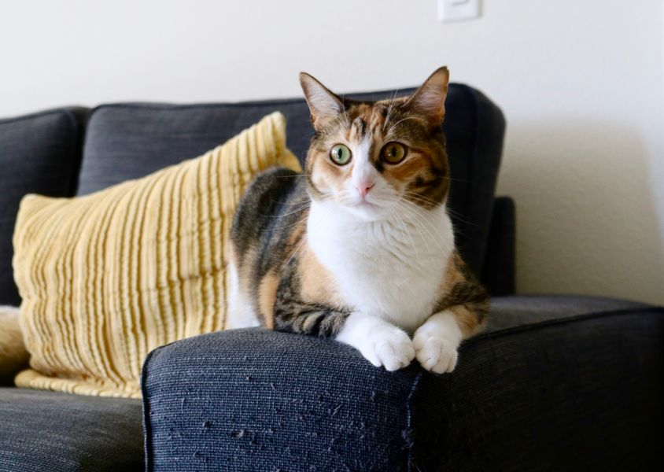
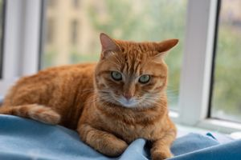
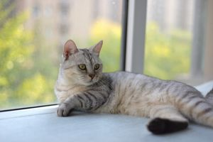
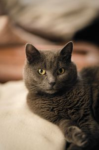
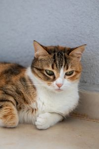

Header Logo
Website for cats!!!
People should adopt more cats. Looking to bring more warmth and happiness into your home? Adoption gives rescue animals the safe, caring future they deserve. Explore our guide to find your perfect match and start your adoption journey today.

Some random cats

A relaxed ginger cat lying on a blue blanket by the window indoors

A serene domestic cat lounging on a windowsill, enjoying the warm daylight

A serene gray cat lounging indoors, showcasing its distinctive yellow eyes and soft fur

A calm calico cat lying on an indoor beige floor with a textured wall background
"Meow, Meow, Meooow"